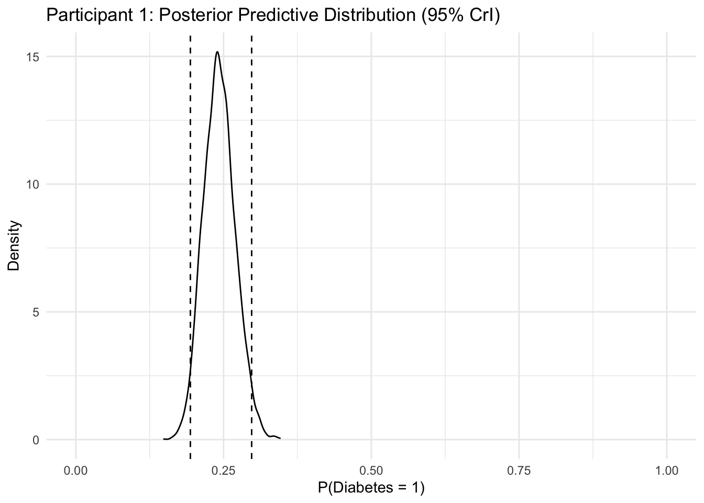

Code
merged_data <- readRDS("data/merged_2013_2014.rds")
merged_n <- nrow(merged_data)A Capstone Project on Bayesian Applications in Epidemiologic Modeling
Slides: slides.html (Edit slides.qmd.)
Diabetes mellitus (DM) remains a major public health challenge, and identifying key risk factors—such as obesity, age, sex, and race/ethnicity—is essential for prevention and targeted intervention. Logistic regression is widely used to estimate associations between such factors and binary outcomes like diabetes diagnosis. However, classical maximum likelihood estimation (MLE) can produce unstable estimates in the presence of missing data, quasi-separation, or small samples. Bayesian logistic regression offers a robust alternative by integrating prior information, regularizing estimates, and quantifying uncertainty more transparently than frequentist approaches.
Bayesian hierarchical models, implemented via Markov Chain Monte Carlo (MCMC), have been successfully applied in predicting patient health status across diseases such as pneumonia, prostate cancer, and mental disorders (Zeger et al. 2020). By representing predictive uncertainty alongside point estimates, Bayesian inference offers a practical advantage in epidemiologic modeling where decisions hinge on probabilistic thresholds. Beyond stability, Bayesian methods support model checking, variable selection, and uncertainty quantification under missingness or imputation frameworks (Baldwin and Larson 2017; Kruschke and Liddell 2017).
Recent work has expanded Bayesian applications to disease diagnostics and health risk modeling. For instance, Bayesian approaches have been used to evaluate NHANES diagnostic data (Chatzimichail and Hatjimihail 2023), to model cardiovascular and metabolic risk (Liu et al. 2013), and to integrate multiple data modalities such as imaging and laboratory measures (Abdullah, Hassan, and Mustafa 2022). Moreover, multiple imputation combined with Bayesian modeling generates robust estimates when data are missing at random (MAR) or not at random (MNAR) (Austin et al. 2021).
The broader Bayesian literature emphasizes the role of priors and model checking. Weakly informative priors, such as \(N(0, 2.5)\) for coefficients, regularize estimation and reduce variance in small samples (Gelman et al. 2008; Vande Schoot et al. 2021). Tutorials using R packages like brms and blavaan illustrate how MCMC enables posterior inference and empirical Bayes analysis (Klauenberg et al. 2015).
Beyond standard generalized linear models, Bayesian nonparametric regression flexibly captures nonlinearity and zero inflation common in health data (Richardson and Hartman 2018). Bayesian Additive Regression Trees (BART) improve variable selection in mixed-type data (Luo et al. 2024), while state-space and dynamic Bayesian models incorporate time-varying biomarkers for longitudinal prediction (Momeni et al. 2021). Bayesian model averaging (BMA) further addresses model uncertainty by weighting across multiple specifications (Hoeting et al. 1999). Together, these approaches demonstrate the versatility and growing importance of Bayesian inference in clinical and epidemiologic modeling.
The objective of this project is to evaluate whether Bayesian inference provides more stable and interpretable estimates of diabetes risk than frequentist and imputation-based approaches, particularly when data complexity or separation challenges arise. Agreement across modeling frameworks supports the robustness of these associations and highlights the interpretability and uncertainty quantification advantages offered by Bayesian analysis in population health modeling (National Center for Health Statistics (NCHS) 2014).
The present study employs Bayesian logistic regression to predict diabetes status and examine the relationships between diabetes and key predictors, including body mass index (BMI), age (≥20 years), sex, and race. Using retrospective data from the 2013–2014 NHANES survey, the analysis accounts for the study’s complex sampling design, which involves stratification, clustering, and the oversampling of specific subpopulations rather than simple random sampling. The Bayesian framework is applied to address common analytical challenges such as missing data, complete case bias, and data separation, thereby improving the robustness and reliability of inference compared to traditional logistic regression methods.
The Bayesian framework integrates prior knowledge with observed data to generate posterior distributions, allowing parameters to be interpreted directly in probabilistic terms.
Unlike traditional frequentist approaches that yield single-point estimates and p-values, Bayesian methods represent parameters as random variables with full probability distributions.
This provides greater flexibility, incorporates parameter uncertainty, and produces credible intervals that directly quantify the probability that a parameter lies within a given range.
Bayesian logistic regression models the log-odds of a binary outcome as a linear combination of predictors:
\[ \text{logit}(P(Y = 1)) = \beta_0 + \beta_1 X_1 + \beta_2 X_2 + \dots + \beta_k X_k \]
where
In the Bayesian framework, model parameters (\(\boldsymbol{\beta}\)) are treated as random variables and assigned prior distributions that reflect existing knowledge or plausible ranges before observing the data. After incorporating the observed evidence, the priors are updated through Bayes’ theorem (Leeuw and Klugkist 2012; Klauenberg et al. 2015):
\[ \text{Posterior} \propto \text{Likelihood} \times \text{Prior} \]
This formulation allows uncertainty to propagate naturally through the model, producing posterior distributions for each coefficient that can be directly interpreted as probabilities.
Weakly informative priors were used to regularize estimation without imposing strong assumptions:
Such priors help stabilize estimation in the presence of multicollinearity, limited sample size, or potential outliers.
Posterior distributions of regression coefficients were used to estimate the probability of the outcome for given predictor values. This allows statements such as: > Given the predictors, the probability of the outcome lies between X% and Y%.
Posterior predictions account for two key sources of uncertainty:
In Bayesian analysis, all unknown quantities—coefficients, means, variances, or probabilities—are treated as random variables described by their posterior distributions.
Model quality and convergence were assessed using standard Bayesian diagnostics:
This study used publicly available 2013–2014 NHANES data published by the CDC’s National Center for Health Statistics (National Center for Health Statistics (NCHS) 2014). Three component files were utilized: DEMO_H (demographics), BMX_H (body measures), and DIQ_H (diabetes questionnaire). Each file was imported in .XPT format using the haven package in R, and merged using the unique participant identifier SEQN to create a single adult analytic dataset (age ≥ 20 years).
All variables were coerced to consistent numeric or factor types prior to merging to ensure atomic columns suitable for survey-weighted analysis and modeling. The use of SEQN preserved respondent integrity across datasets and ensured accurate record linkage. This preprocessing step standardized variable formats and minimized inconsistencies between files.
Data wrangling, cleaning, and merging were performed in R using a combination of base functions and tidyverse packages. Bayesian logistic regression modeling was later implemented using the brms interface to Stan, allowing probabilistic inference within a reproducible workflow that accommodated the NHANES complex survey design and missing data considerations.
merged_data <- readRDS("data/merged_2013_2014.rds")
merged_n <- nrow(merged_data)The merged dataset contains 10,175 participants. It integrates demographic, examination, and diabetes questionnaire data. We then restrict the sample to adults (age ≥ 20) to define the analytic cohort used in subsequent analyses. A small proportion of records have missing values in BMI and diabetes status, which will be addressed later through multiple imputation.
| RIDAGEYR | BMXBMI | RIAGENDR | RIDRETH1 | DIQ010 |
|---|---|---|---|---|
| 69 | 26.7 | 1 | 4 | 1 |
| 54 | 28.6 | 1 | 3 | 1 |
| 72 | 28.9 | 1 | 3 | 1 |
| 9 | 17.1 | 1 | 3 | 2 |
| 73 | 19.7 | 2 | 3 | 2 |
| 56 | 41.7 | 1 | 1 | 2 |
| 0 | NA | 1 | 3 | NA |
| 61 | 35.7 | 2 | 3 | 2 |
| 42 | NA | 1 | 2 | 2 |
| 56 | 26.5 | 2 | 3 | 2 |
Response Variable:
diabetes_dx (binary) represents a Type 2 diabetes diagnosis, excluding gestational diabetes. It was derived from DIQ010 (“Doctor told you have diabetes”), while DIQ050 (insulin use) was excluded to prevent treatment-related confounding.
Predictor Variables:
BMXBMI – Body Mass Index (kg/m^2), treated as continuous and categorized into six BMI classes (bmi_cat).RIDAGEYR – Age (continuous, 20–80 years)RIAGENDR – Sex (factor, two levels)RIDRETH1 – Ethnicity (factor, five levels)var_tbl <- tribble(
~Variable, ~Description, ~Type, ~Origin,
"diabetes_dx","Type 2 diabetes diagnosis (1 = Yes, 0 = No) derived from DIQ010; gestational diabetes excluded.", "Categorical", "Derived from DIQ010",
"age", "Age in years.", "Continuous", "NHANES RIDAGEYR",
"bmi", "Body Mass Index (kg/m^2) computed from measured height and weight.", "Continuous", "NHANES BMXBMI",
"bmi_cat", "BMI categories: Underweight, Normal, Overweight, Obesity I–III (Normal is reference in models).", "Categorical", "Derived from bmi",
"sex", "Sex of participant (Male, Female).", "Categorical", "NHANES RIAGENDR",
"race", "Race/ethnicity collapsed to four levels: White, Black, Hispanic, Other.", "Categorical", "Derived from RIDRETH1",
"WTMEC2YR", "Examination sample weight for Mobile Examination Center participants.", "Weight", "NHANES design",
"SDMVPSU", "Primary Sampling Unit used for variance estimation in the complex survey design.", "Design", "NHANES design",
"SDMVSTRA", "Stratum identifier used to define strata for the complex survey design.", "Design", "NHANES design",
"age_c", "Centered and standardized age (z-score).", "Continuous", "Derived from age",
"bmi_c", "Centered and standardized BMI (z-score).", "Continuous", "Derived from bmi"
)
kbl(
var_tbl,
caption = "Variable Descriptions: Adult Analytic Dataset",
align = c("l","l","l","l"),
escape = TRUE # or just remove this line, TRUE is the default
) %>%
kable_styling(full_width = FALSE, position = "center",
bootstrap_options = c("striped","hover")) %>%
group_rows("Analysis variables", 1, 6) %>%
group_rows("Survey design variables", 7, 9) %>%
group_rows("Derived variables", 10, 11)| Variable | Description | Type | Origin |
|---|---|---|---|
| Analysis variables | |||
| diabetes_dx | Type 2 diabetes diagnosis (1 = Yes, 0 = No) derived from DIQ010; gestational diabetes excluded. | Categorical | Derived from DIQ010 |
| age | Age in years. | Continuous | NHANES RIDAGEYR |
| bmi | Body Mass Index (kg/m^2) computed from measured height and weight. | Continuous | NHANES BMXBMI |
| bmi_cat | BMI categories: Underweight, Normal, Overweight, Obesity I–III (Normal is reference in models). | Categorical | Derived from bmi |
| sex | Sex of participant (Male, Female). | Categorical | NHANES RIAGENDR |
| race | Race/ethnicity collapsed to four levels: White, Black, Hispanic, Other. | Categorical | Derived from RIDRETH1 |
| Survey design variables | |||
| WTMEC2YR | Examination sample weight for Mobile Examination Center participants. | Weight | NHANES design |
| SDMVPSU | Primary Sampling Unit used for variance estimation in the complex survey design. | Design | NHANES design |
| SDMVSTRA | Stratum identifier used to define strata for the complex survey design. | Design | NHANES design |
| Derived variables | |||
| age_c | Centered and standardized age (z-score). | Continuous | Derived from age |
| bmi_c | Centered and standardized BMI (z-score). | Continuous | Derived from bmi |
The National Health and Nutrition Examination Survey (NHANES) employs a complex, multistage probability sampling design with stratification, clustering, and oversampling of specific demographic groups (for example, racial/ethnic minorities and older adults) to produce nationally representative estimates of the U.S. population.
Survey design variables — primary sampling units (SDMVPSU), strata (SDMVSTRA), and examination sample weights (WTMEC2YR) — were retained to account for this complex design. These variables were applied to adjust for unequal probabilities of selection, nonresponse, and oversampling, ensuring valid standard errors, unbiased prevalence estimates, and generalizable population-level inference.
A survey-weighted logistic regression model was used to evaluate the association between diabetes status (diabetes_dx, binary outcome) and key predictors: body mass index (bmi), age (age), sex (sex), and race/ethnicity (race). Diabetes was defined using DIQ010 (“Doctor told you have diabetes”) and coded as 0/1, with DIQ050 (insulin use) excluded to avoid treatment-related confounding.
Covariates included:
- age (continuous; centered as age_c, categorized 20–80 years)
- bmi (continuous; centered as bmi_c, and categorized by BMI class bmi_cat)
- sex (male, female)
- race (four ethnicity levels: White, Black, Hispanic, Other)
This approach accounts for NHANES’ complex sampling design, producing unbiased parameter estimates and valid inference for U.S. adults.
| Step | Description |
|---|---|
| Weighting | Used the survey package to calculate weighted means for key variables (e.g., age and diabetes status) and to estimate design effects and effective sample size for the complex survey design. |
| Standardization | Centered and standardized BMI and age (bmi_c, age_c) for use in regression models. |
| Age Categorization | Not implemented in the analytic dataset (continuous age retained). Reference retained for potential descriptive grouping (20–<30, 30–<40, 40–<50, 50–<60, 60–<70, 70–80). |
| BMI Categorization | Recoded as: <18.5 (Underweight), 18.5–<25 (Normal), 25–<30 (Overweight), 30–<35 (Obesity I), 35–<40 (Obesity II), ≥40 (Obesity III). |
| Ethnicity Recoding | RIDRETH1 recoded as: 1 = Mexican American, 2 = Other Hispanic, 3 = Non-Hispanic White, 4 = Non-Hispanic Black, 5 = Other/Multi; then NH White set as the reference level (five analytical levels retained). |
| Special Codes | Transformed nonresponse codes (e.g., 3, 7, 9) to NA. These missing codes were evaluated for potential nonrandom patterns (MAR/MNAR). |
| Missing Data | Retained and visualized missing values (primarily in BMI and diabetes status) to assess their pattern and informativeness before multiple imputation. |
| Final Dataset | Created the cleaned analytic dataset (adult) using Non-Hispanic White and Male as reference groups for modeling, preserving NHANES survey design variables (WTMEC2YR, SDMVPSU, SDMVSTRA). |
# NHANES survey design object for the adult analytic cohort
nhanes_design_adult <- survey::svydesign(
id = ~SDMVPSU,
strata = ~SDMVSTRA,
weights = ~WTMEC2YR,
nest = TRUE,
data = adult
)
# Quick weighted checks
survey::svymean(~age, nhanes_design_adult, na.rm = TRUE) mean SE
age 47.496 0.3805survey::svymean(~diabetes_dx, nhanes_design_adult, na.rm = TRUE) mean SE
diabetes_dx 0.089016 0.0048# Design effect and effective sample size for `diabetes_dx`
v_hat <- as.numeric(survey::svyvar(~diabetes_dx, nhanes_design_adult, na.rm = TRUE))
p_hat <- mean(adult$diabetes_dx, na.rm = TRUE)
n_obs <- nrow(adult)
v_srs <- p_hat * (1 - p_hat) / n_obs
deff <- v_hat / v_srs
n_total <- sum(weights(nhanes_design_adult), na.rm = TRUE)
ess <- as.numeric(n_total / deff)
cat("Design effect for diabetes_dx:", round(deff, 2), "\n")Design effect for diabetes_dx: 4759.91 cat("Effective sample size for diabetes_dx:", round(ess), "\n")Effective sample size for diabetes_dx: 48142 Descriptive statistics for continuous and categorical variables are presented below.
# Keep only analytic variables for Table 1
tbl1_dat <- adult %>%
transmute(
age,
bmi,
bmi_cat,
sex,
race,
diabetes_dx = factor(diabetes_dx, levels = c(0, 1), labels = c("No", "Yes"))
)
# Continuous summaries: N, missing, mean, sd, min, max
cont_vars <- c("age", "bmi")
cont_sum <- tbl1_dat %>%
select(all_of(cont_vars)) %>%
pivot_longer(everything(), names_to = "Variable", values_to = "value") %>%
group_by(Variable) %>%
summarise(
N = sum(!is.na(value)),
Missing = sum(is.na(value)),
Mean = round(mean(value, na.rm = TRUE), 2),
SD = round(sd(value, na.rm = TRUE), 2),
Min = round(min(value, na.rm = TRUE), 1),
Max = round(max(value, na.rm = TRUE), 1),
.groups = "drop"
)
# Categorical summaries: counts and percents
cat_vars <- c("sex", "race", "diabetes_dx", "bmi_cat")
cat_sum <- tbl1_dat %>%
mutate(across(all_of(cat_vars),
~ forcats::fct_explicit_na(as.factor(.x), na_level = "(Missing)"))) %>%
select(all_of(cat_vars)) %>%
pivot_longer(everything(), names_to = "Variable", values_to = "Level") %>%
count(Variable, Level, name = "n") %>%
group_by(Variable) %>%
mutate(pct = round(100 * n / sum(n), 1)) %>%
ungroup() %>%
arrange(Variable, desc(n))
# Render tables
kable(cont_sum,
caption = "Table 1a. Continuous variables (age, BMI): N, missing, mean (SD), range.") %>%
kable_styling(full_width = FALSE)| Variable | N | Missing | Mean | SD | Min | Max |
|---|---|---|---|---|---|---|
| age | 5769 | 0 | 49.11 | 17.56 | 20.0 | 80.0 |
| bmi | 5520 | 249 | 29.10 | 7.15 | 14.1 | 82.9 |
kable(cat_sum,
caption = "Table 1b. Categorical variables (sex, race, diabetes_dx, bmi_cat): counts and percentages.") %>%
kable_styling(full_width = FALSE)| Variable | Level | n | pct |
|---|---|---|---|
| bmi_cat | 25–<30 | 1768 | 30.6 |
| bmi_cat | 18.5–<25 | 1579 | 27.4 |
| bmi_cat | 30–<35 | 1145 | 19.8 |
| bmi_cat | 35–<40 | 519 | 9.0 |
| bmi_cat | ≥40 | 419 | 7.3 |
| bmi_cat | (Missing) | 249 | 4.3 |
| bmi_cat | <18.5 | 90 | 1.6 |
| diabetes_dx | No | 4974 | 86.2 |
| diabetes_dx | Yes | 618 | 10.7 |
| diabetes_dx | (Missing) | 177 | 3.1 |
| race | NH White | 2472 | 42.8 |
| race | NH Black | 1177 | 20.4 |
| race | Other/Multi | 845 | 14.6 |
| race | Mexican American | 767 | 13.3 |
| race | Other Hispanic | 508 | 8.8 |
| sex | Female | 3011 | 52.2 |
| sex | Male | 2758 | 47.8 |
Table 1a and 1b summarize the analytic variables included in subsequent models. Mean age and BMI values indicate an adult cohort spanning a wide range of body composition, while categorical summaries confirm balanced sex representation and sufficient sample sizes across race/ethnicity categories. These variables were standardized and used as predictors in all modeling frameworks (analytic cohort N = 5,769 adults ≥ 20 years).
adult_n <- nrow(adult)| SDMVPSU | SDMVSTRA | WTMEC2YR | diabetes_dx | bmi | age | sex | race | DIQ050 | age_c | bmi_c | bmi_cat |
|---|---|---|---|---|---|---|---|---|---|---|---|
| 1 | 112 | 13481.04 | 1 | 26.7 | 69 | Male | NH Black | 1 | 1.1324183 | -0.3358861 | 25–<30 |
| 1 | 108 | 24471.77 | 1 | 28.6 | 54 | Male | NH White | 1 | 0.2783598 | -0.0702810 | 25–<30 |
| 1 | 109 | 57193.29 | 1 | 28.9 | 72 | Male | NH White | 1 | 1.3032300 | -0.0283434 | 25–<30 |
| 2 | 116 | 65541.87 | 0 | 19.7 | 73 | Female | NH White | 2 | 1.3601672 | -1.3144311 | 18.5–<25 |
| 1 | 111 | 25344.99 | 0 | 41.7 | 56 | Male | Mexican American | 2 | 0.3922343 | 1.7609961 | ≥40 |
| 1 | 114 | 61758.65 | 0 | 35.7 | 61 | Female | NH White | 2 | 0.6769204 | 0.9222432 | 35–<40 |
As shown in Table 1, the analytic adult cohort (N = 5,769) includes standardized variables for age and BMI (age_c, bmi_c), categorical indicators for sex and race/ethnicity (race), and a binary doctor-diagnosed diabetes variable (diabetes_dx).
# Textual structure and preview
str(adult)'data.frame': 5769 obs. of 12 variables:
$ SDMVPSU : num 1 1 1 2 1 1 2 1 2 2 ...
$ SDMVSTRA : num 112 108 109 116 111 114 106 112 112 113 ...
$ WTMEC2YR : num 13481 24472 57193 65542 25345 ...
$ diabetes_dx: num 1 1 1 0 0 0 0 0 0 0 ...
$ bmi : num 26.7 28.6 28.9 19.7 41.7 35.7 NA 26.5 22 20.3 ...
$ age : num 69 54 72 73 56 61 42 56 65 26 ...
$ sex : Factor w/ 2 levels "Male","Female": 1 1 1 2 1 2 1 2 1 2 ...
$ race : Factor w/ 5 levels "NH White","Mexican American",..: 4 1 1 1 2 1 3 1 1 1 ...
$ DIQ050 : num 1 1 1 2 2 2 2 2 2 2 ...
$ age_c : num 1.132 0.278 1.303 1.36 0.392 ...
$ bmi_c : num -0.3359 -0.0703 -0.0283 -1.3144 1.761 ...
$ bmi_cat : Factor w/ 6 levels "<18.5","18.5–<25",..: 3 3 3 2 6 5 NA 3 2 2 ...# Visual structure and type overview
plot_intro(adult, title = "Adult Dataset: Variable Types and Completeness")
# Visualize missing data pattern
plot_missing(adult, title = "Missing Data Pattern (Adult Dataset)")
# Summarize missingness for key analysis variables
miss_tbl <- tibble::tibble(
Variable = c("bmi", "diabetes_dx"),
Missing_n = c(sum(is.na(adult_eda$bmi)), sum(is.na(adult_eda$diabetes_dx))),
Missing_pct = round(c(mean(is.na(adult_eda$bmi)), mean(is.na(adult_eda$diabetes_dx))) * 100, 1)
)
knitr::kable(
miss_tbl,
caption = "Missingness for Key Analysis Variables."
)| Variable | Missing_n | Missing_pct |
|---|---|---|
| bmi | 249 | 4.3 |
| diabetes_dx | 177 | 3.1 |
Overall missingness was low (~7.3%). Gaps were concentrated in bmi (n = 249) and diabetes_dx (n = 177), while demographic and design variables were complete. This limited pattern of missingness is consistent with a Missing At Random (MAR) mechanism and likely reflects reduced participation in the physical examination component among certain adults.
Following the missing data assessment, exploratory analyses were conducted to describe the adult analytic cohort and visualize distributions across key demographic and health variables. The goal was to examine univariate patterns and bivariate relationships relevant to diabetes prevalence prior to modeling.
The adult analytic cohort was broadly representative of the U.S. population, with a majority identifying as Non-Hispanic White. Age and BMI distributions were right-skewed, with most participants classified as overweight or obese. Visual exploration revealed a clear positive association between age, BMI, and diabetes prevalence. Non-Hispanic Black and Hispanic participants exhibited higher diabetes prevalence compared with Non-Hispanic Whites.
Approximately 25% of variables were categorical (e.g., sex, race, diabetes_dx) and 75% were continuous (e.g., age, bmi, age_c, bmi_c), indicating that the dataset primarily comprised measured numeric values. About 93% of observations contained complete information across all predictors and outcomes, reflecting high data quality.
Adult age ranged from 20 to 80 years, with peak representation between 30 and 50 years and a slight right skew toward older ages. BMI was concentrated in the overweight and obese ranges, and Female participants were slightly overrepresented relative to Male participants.
# Age distribution (analytic adult)
ggplot(adult, aes(x = age)) +
geom_histogram(binwidth = 5, color = "white") +
labs(title = "Distribution of Age (≥20 years)", x = "Age (years)", y = "Count") +
theme_minimal()
# Diabetes outcome distribution
ggplot(adult, aes(x = factor(diabetes_dx, levels = c(0,1), labels = c("No","Yes")))) +
geom_bar() +
labs(title = "Diabetes Outcome Distribution (≥20 years)", x = "Diabetes (No/Yes)", y = "Count") +
theme_minimal()
No), while approximately 11% had diabetes (Yes) and 3% had missing responses, reflecting expected population prevalence and limited outcome missingness.# BMI category distribution
ggplot(adult, aes(x = bmi_cat)) +
geom_bar(color = "white", fill = "skyblue") +
labs(title = "Distribution of BMI Categories (≥20 years)", x = "BMI Category", y = "Count") +
theme_minimal()
# BMI by diabetes outcome (boxplot)
# (You can’t use boxplot with categorical y, so revert to numeric BMI here)
ggplot(adult, aes(x = factor(diabetes_dx, levels = c(0,1), labels = c("No","Yes")), y = bmi)) +
geom_boxplot(fill = "lightblue") +
labs(title = "BMI by Diabetes Diagnosis (≥20 years)", x = "Diabetes (No/Yes)", y = "BMI (numeric)") +
theme_minimal()
Yes) show a higher median BMI and greater variability compared to those without diabetes (No), supporting the established positive association between obesity and diabetes risk.# Diabetes by race (dodged bars)
ggplot(adult, aes(x = race, fill = factor(diabetes_dx, levels = c(0,1), labels = c("No","Yes")))) +
geom_bar(position = "dodge") +
labs(title = "Diabetes Diagnosis by race/Ethnicity (≥20 years)",
x = "race/Ethnicity (race)", y = "Count", fill = "Diabetes") +
theme_minimal() +
theme(axis.text.x = element_text(angle = 45, hjust = 1))
Three modeling frameworks were compared using identical predictors—standardized age, BMI, sex, and race—and the binary outcome diabetes_dx:
survey-weighted logistic regression to account for the NHANES complex sampling design,
multiple imputation (MICE) to handle missing BMI values, and
Bayesian logistic regression with weakly informative priors to quantify parameter uncertainty.
The NHANES 2013–2014 data use a complex, multistage probability design involving strata (SDMVSTRA), primary sampling units (PSUs; SDMVPSU), and examination weights (WTMEC2YR) to ensure nationally representative estimates (National Center for Health Statistics (NCHS) 2014).
Estimates are population-weighted using NHANES survey design variables (WTMEC2YR, SDMVSTRA, SDMVPSU). Odds ratios are reported per one standard deviation (1 SD) increase in age and BMI, with reference groups Male and White.
adult_clean <- adult %>%
dplyr::mutate(
sex = forcats::fct_drop(sex),
race = forcats::fct_drop(race),
age_c = as.numeric(age_c),
bmi_c = as.numeric(bmi_c)
) %>%
dplyr::filter(
!is.na(diabetes_dx),
!is.na(age_c),
!is.na(bmi_c),
!is.na(sex),
!is.na(race)
)Below is a structure of the analytic dataset used for regression modeling, showing variable names, types, and sample values (N = 5,349).
str(adult_clean[, c("diabetes_dx","sex","race","age_c","bmi_c")])'data.frame': 5349 obs. of 5 variables:
$ diabetes_dx: num 1 1 1 0 0 0 0 0 0 1 ...
$ sex : Factor w/ 2 levels "Male","Female": 1 1 1 2 1 2 2 1 2 1 ...
$ race : Factor w/ 5 levels "NH White","Mexican American",..: 4 1 1 1 2 1 1 1 1 1 ...
$ age_c : num 1.132 0.278 1.303 1.36 0.392 ...
$ bmi_c : num -0.3359 -0.0703 -0.0283 -1.3144 1.761 ...knitr::kable(
table(adult_clean$sex)
)| Var1 | Freq |
|---|---|
| Male | 2551 |
| Female | 2798 |
knitr::kable(
table(adult_clean$race)
)| Var1 | Freq |
|---|---|
| NH White | 2293 |
| Mexican American | 713 |
| Other Hispanic | 470 |
| NH Black | 1101 |
| Other/Multi | 772 |
knitr::kable(
table(adult_clean$diabetes_dx)
)| Var1 | Freq |
|---|---|
| 0 | 4752 |
| 1 | 597 |
options(survey.lonely.psu = "adjust")
nhanes_design_adult <- survey::svydesign(
id = ~SDMVPSU,
strata = ~SDMVSTRA,
weights = ~WTMEC2YR,
nest = TRUE,
data = adult_clean
)
svy_fit <- survey::svyglm(
diabetes_dx ~ age_c + bmi_c + sex + race,
design = nhanes_design_adult,
family = quasibinomial()
)
svy_or <- broom::tidy(svy_fit, conf.int = TRUE) %>%
dplyr::mutate(
OR = exp(estimate),
LCL = exp(conf.low),
UCL = exp(conf.high)
) %>%
dplyr::select(term, OR, LCL, UCL, p.value) %>%
dplyr::filter(term != "(Intercept)")knitr::kable(svy_or)| term | OR | LCL | UCL | p.value |
|---|---|---|---|---|
| age_c | 3.0292807 | 2.6967690 | 3.4027912 | 0.0000000 |
| bmi_c | 1.8853571 | 1.6526296 | 2.1508579 | 0.0000039 |
| sexFemale | 0.5281132 | 0.4104905 | 0.6794397 | 0.0003857 |
| raceMexican American | 2.0358434 | 1.4850041 | 2.7910081 | 0.0008262 |
| raceOther Hispanic | 1.5915182 | 1.1664529 | 2.1714810 | 0.0087119 |
| raceNH Black | 1.6689718 | 1.1605895 | 2.4000450 | 0.0116773 |
| raceOther/Multi | 2.3270527 | 1.5451752 | 3.5045697 | 0.0014331 |
age_c and bmi_c are the strongest predictors of diabetes in the NHANES 2013–2014 adult cohort, with each 1 SD increase in age nearly tripling the odds of diabetes and higher BMI substantially elevating risk. Males show significantly lower odds of diabetes than females, consistent with established sex differences in metabolic outcomes. Racial and ethnic disparities are evident, with Mexican American, Other Hispanic, Non-Hispanic Black, and Other/Multi-racial adults all showing significantly higher odds of diabetes compared to Non-Hispanic Whites. All predictors were statistically significant (p < 0.05), indicating robust associations across demographic and health characteristics.
Multiple Imputation by Chained Equations (MICE) was implemented as a principled approach for handling missing data (Stef van Buuren and Groothuis-Oudshoorn 2011; S. van Buuren 2012). MICE iteratively imputes each incomplete variable using regression models based on other variables in the dataset, generating multiple completed datasets that incorporate uncertainty from the imputation process. Estimates are subsequently pooled across imputations using Rubin’s rules to obtain final parameter estimates and confidence intervals.
As an alternative to full Bayesian joint modeling, MICE provides an efficient and flexible framework for managing missing data through chained regression equations. For large sample sizes (n ≥ 400), even with substantial missingness (up to 75%) in a single variable, MICE remains robust to non-normality—such as skewed, multimodal, or heavy-tailed distributions—without materially affecting mean structure estimation performance (S. van Buuren 2012).
In this study, continuous variables were imputed using regression-based methods: age via normal linear regression (norm) and BMI via predictive mean matching (pmm) to better preserve the empirical BMI distribution. Categorical variables (sex and race) were imputed using logistic and polytomous regression models, respectively. Diabetes status (diabetes_dx) was treated as an outcome variable and was not imputed. Twenty imputations were generated to minimize Monte Carlo error and ensure stable variance estimation.
The chained equation process showed stable convergence across iterations, confirming reliable estimation of missing BMI (and, where present, age) values. After applying MICE, the final imputed dataset included n = 5,592 adults with all key predictors completed.
adult_imp1 <- mice::complete(imp, 1) %>%
dplyr::mutate(
age_c = as.numeric(scale(age)),
bmi_c = as.numeric(scale(bmi)),
wt_norm = WTMEC2YR / mean(WTMEC2YR, na.rm = TRUE),
race = forcats::fct_relevel(race, "NH White"),
sex = forcats::fct_relevel(sex, "Male")
) %>%
dplyr::filter(
!is.na(diabetes_dx),
!is.na(age_c),
!is.na(bmi_c),
!is.na(sex),
!is.na(race)
) %>%
droplevels()
glimpse(adult_imp1)Rows: 5,592
Columns: 11
$ diabetes_dx <dbl> 1, 1, 1, 0, 0, 0, 0, 0, 0, 0, 1, 0, 0, 0, 0, 0, 0, 0, 0, 0…
$ age <dbl> 69, 54, 72, 73, 56, 61, 42, 56, 65, 26, 76, 33, 32, 38, 50…
$ bmi <dbl> 26.7, 28.6, 28.9, 19.7, 41.7, 35.7, 23.6, 26.5, 22.0, 20.3…
$ sex <fct> Male, Male, Male, Female, Male, Female, Male, Female, Male…
$ race <fct> NH Black, NH White, NH White, NH White, Mexican American, …
$ WTMEC2YR <dbl> 13481.04, 24471.77, 57193.29, 65541.87, 25344.99, 61758.65…
$ SDMVPSU <dbl> 1, 1, 1, 2, 1, 1, 2, 1, 2, 2, 1, 2, 2, 2, 2, 1, 1, 1, 2, 2…
$ SDMVSTRA <dbl> 112, 108, 109, 116, 111, 114, 106, 112, 112, 113, 116, 114…
$ age_c <dbl> 1.13241831, 0.27835981, 1.30323001, 1.36016725, 0.39223428…
$ bmi_c <dbl> -0.33319172, -0.06755778, -0.02561558, -1.31184309, 1.7639…
$ wt_norm <dbl> 0.3393916, 0.6160884, 1.4398681, 1.6500477, 0.6380722, 1.5…After imputation, the analytic dataset contained approximately 5,500–5,600 adults. The mean age was around 49 years (SD ≈ 17), and the mean BMI was approximately 29 (SD ≈ 7). Female participants represented about 52% of the sample, and the majority identified as Non-Hispanic White (~43%). The estimated diabetes prevalence was ~11%, consistent with population-level NHANES benchmarks.
correlation_matrix <- cor(adult_imp1[, c("diabetes_dx", "age", "bmi")], use = "complete.obs", method = "pearson")
correlation_melted <- melt(correlation_matrix)
ggplot(correlation_melted, aes(Var1, Var2, fill = value)) +
geom_tile(color = "white") +
scale_fill_gradient2(low = "blue", high = "red", mid = "white", midpoint = 0, name = "Correlation") +
theme_minimal() +
theme(axis.text.x = element_text(angle = 45, hjust = 1)) +
labs(title = "Correlation Heatmap: Diabetes, Age, and BMI")
diabetes_dx, age, and BMI. Both age and BMI exhibit moderate positive correlations with diabetes diagnosis, consistent with known metabolic risk trends in the NHANES adult population.ggplot(adult_imp1, aes(x = factor(diabetes_dx))) +
geom_bar(fill = "steelblue") +
labs(title = "Diabetes Diagnosis Distribution", x = "Diabetes (0 = No, 1 = Yes)", y = "Count") +
theme_minimal()
0), while about 11% reported a positive diagnosis (1), consistent with NHANES population prevalence.ggplot(adult_imp1, aes(x = factor(diabetes_dx), y = bmi, fill = factor(diabetes_dx))) +
geom_boxplot(alpha = 0.7) +
scale_x_discrete(labels = c("0" = "No Diabetes", "1" = "Diabetes")) +
labs(x = "Diabetes Diagnosis", y = "BMI", title = "BMI Distribution by Diabetes Status") +
theme_minimal() +
theme(legend.position = "none")
No vs Diabetes). This descriptive plot compares BMI distributions between groups, highlighting higher median BMI, greater spread, and more outliers in the diabetes group. It is used in the EDA to summarize group differences before modeling.The boxplot in Figure @ref(fig-bmi-diabetes-box) is descriptive: it summarizes the median, spread, and outliers in BMI for participants with and without diabetes. The visibly higher median and wider spread in the diabetes group reinforce the positive association between excess adiposity and diabetes risk seen in later regression models.
ggplot(adult_imp1, aes(x = bmi, y = diabetes_dx)) +
geom_point(alpha = 0.2, position = position_jitter(height = 0.02)) +
geom_smooth(method = "glm", method.args = list(family = "binomial"), se = TRUE, color = "blue") +
labs(x = "BMI", y = "Probability of Diabetes", title = "Predicted Probability of Diabetes vs BMI") +
theme_minimal()
In contrast to the descriptive boxplot, Figure @ref(fig-pred-bmi) is inferential: it displays the regression-based fitted probability of diabetes across the BMI continuum. The non-linear, increasing curve and its confidence band summarize how modeled diabetes risk escalates with higher BMI.
miss_age <- sum(is.na(mi_dat$age))
miss_bmiN <- sum(is.na(mi_dat$bmi))
mi_caption <- if (miss_age > 0 && miss_bmiN > 0) {
"Multiple Imputation (MICE): pooled odds ratios (OR) and 95% confidence intervals after imputing missing age (normal) and BMI (PMM) (m = 20); diabetes status was not imputed."
} else if (miss_bmiN > 0) {
"Multiple Imputation (MICE): pooled odds ratios (OR) and 95% confidence intervals after imputing missing BMI (PMM) (m = 20); diabetes status was not imputed."
} else if (miss_age > 0) {
"Multiple Imputation (MICE): pooled odds ratios (OR) and 95% confidence intervals after imputing missing age (normal) (m = 20); diabetes status was not imputed."
} else {
"Multiple Imputation (MICE): pooled odds ratios (OR) and 95% confidence intervals (no variables required imputation); diabetes status was not imputed."
}
mi_caption <- paste0(mi_caption, " Odds ratios are per 1 SD for age and BMI.")
knitr::kable(mi_or, caption = mi_caption)| term | OR | std.error | statistic | df | p.value | LCL | UCL | conf.low | conf.high | |
|---|---|---|---|---|---|---|---|---|---|---|
| 2 | age_c | 2.9038183 | 0.0559473 | 19.054108 | 5520.446 | 0.0000000 | 2.6021752 | 3.2404277 | 2.6021752 | 3.2404277 |
| 3 | bmi_c | 1.7278084 | 0.0447339 | 12.224604 | 5148.557 | 0.0000000 | 1.5827382 | 1.8861754 | 1.5827382 | 1.8861754 |
| 4 | sexFemale | 0.5391132 | 0.0937913 | -6.587282 | 5551.660 | 0.0000000 | 0.4485669 | 0.6479368 | 0.4485669 | 0.6479368 |
| 5 | raceMexican American | 2.4296216 | 0.1375046 | 6.456041 | 5472.583 | 0.0000000 | 1.8555327 | 3.1813298 | 1.8555327 | 3.1813298 |
| 6 | raceOther Hispanic | 1.7518320 | 0.1748554 | 3.206433 | 5573.987 | 0.0013515 | 1.2434346 | 2.4680953 | 1.2434346 | 2.4680953 |
| 7 | raceNH Black | 1.9757793 | 0.1198118 | 5.683602 | 5576.734 | 0.0000000 | 1.5621842 | 2.4988753 | 1.5621842 | 2.4988753 |
| 8 | raceOther/Multi | 2.1120110 | 0.1530066 | 4.886328 | 4749.963 | 0.0000011 | 1.5646727 | 2.8508138 | 1.5646727 | 2.8508138 |
Age and BMI are strong positive predictors of diabetes; each 1 SD increase substantially increases the odds of diagnosis.Sex: Females exhibit significantly lower odds of diabetes compared to males.Race/Ethnicity: All non-White racial and ethnic groups demonstrate higher odds of diabetes compared to Non-Hispanic Whites, underscoring persistent disparities in diabetes risk.Bayesian logistic regression was used to quantify parameter uncertainty and compare posterior estimates with the survey-weighted and MICE models. Weakly informative priors were applied to regularize estimates while preserving flexibility in inference.
Model Specifications: - Family: Bernoulli with logit link
- Data: adult_imp1 (N = 5,592)
- Chains: 4 (2,000 iterations each; 1,000 warmup)
- Adaptation delta: 0.95
- Weights: Normalized NHANES examination weights (wt_norm, mean ≈ 1.00, SD ≈ 0.79)
- Predictors: Standardized age, BMI, sex, and race
fml_bayes <- diabetes_dx | weights(wt_norm) ~ age_c + bmi_c + sex + race
priors <- c(
brms::set_prior("normal(0, 2.5)", class = "b"),
brms::set_prior("student_t(3, 0, 10)", class = "Intercept")
)adult_long <- adult_imp1 %>%
dplyr::select(bmi_c, age_c) %>%
tidyr::pivot_longer(
cols = dplyr::everything(),
names_to = "Coefficient",
values_to = "Value"
)
ggplot2::ggplot(adult_long, ggplot2::aes(x = Value, fill = Coefficient)) +
ggplot2::geom_density(alpha = 0.5) +
ggplot2::theme_minimal() +
ggplot2::labs(
title = "Distributions for Standardized Age and BMI (adult_imp1)",
x = "Standardized value (z-score)",
y = "Density",
fill = "Coefficient"
)
age_c) and BMI (bmi_c) in the imputed dataset (adult_imp1). Both variables were mean-centered and scaled (z-scores) for inclusion in regression models. The overlapping density curves indicate approximate normality and comparable variance, supporting suitability for standardized coefficient estimation.prior_draws <- tibble::tibble(
term = rep(c("Age (per 1 SD)", "BMI (per 1 SD)"), each = 4000),
value = c(
stats::rnorm(4000, mean = 0, sd = 2.5),
stats::rnorm(4000, mean = 0, sd = 2.5)
)
)
ggplot2::ggplot(prior_draws, ggplot2::aes(x = value, fill = term)) +
ggplot2::geom_density(alpha = 0.5) +
ggplot2::theme_minimal() +
ggplot2::labs(
title = "Prior Distributions for Age and BMI Coefficients",
x = "Coefficient value",
y = "Density",
fill = NULL
)
priors <- c(
brms::set_prior("normal(0, 2.5)", class = "b"),
brms::set_prior("student_t(3, 0, 10)", class = "Intercept")
)
bayes_fit <- brms::brm(
formula = diabetes_dx | weights(wt_norm) ~ age_c + bmi_c + sex + race,
data = adult_imp1,
family = bernoulli(link = "logit"),
prior = priors,
chains = 4, iter = 2000, seed = 123,
control = list(adapt_delta = 0.95),
refresh = 0
)Running MCMC with 4 sequential chains...
Chain 1 finished in 11.3 seconds.
Chain 2 finished in 10.4 seconds.
Chain 3 finished in 10.9 seconds.
Chain 4 finished in 11.4 seconds.
All 4 chains finished successfully.
Mean chain execution time: 11.0 seconds.
Total execution time: 44.3 seconds.summary(bayes_fit) Family: bernoulli
Links: mu = logit
Formula: diabetes_dx | weights(wt_norm) ~ age_c + bmi_c + sex + race
Data: adult_imp1 (Number of observations: 5592)
Draws: 4 chains, each with iter = 2000; warmup = 1000; thin = 1;
total post-warmup draws = 4000
Regression Coefficients:
Estimate Est.Error l-95% CI u-95% CI Rhat Bulk_ESS Tail_ESS
Intercept -2.66 0.09 -2.83 -2.50 1.00 3548 3512
age_c 1.10 0.06 0.98 1.22 1.00 2349 2618
bmi_c 0.63 0.05 0.54 0.72 1.00 3327 2826
sexFemale -0.66 0.10 -0.86 -0.47 1.00 3668 3124
raceMexicanAmerican 0.69 0.17 0.34 1.03 1.00 3657 2821
raceOtherHispanic 0.43 0.25 -0.07 0.89 1.00 4242 3014
raceNHBlack 0.53 0.15 0.23 0.83 1.00 3809 3012
raceOtherDMulti 0.81 0.19 0.45 1.18 1.00 3948 2809
Draws were sampled using sample(hmc). For each parameter, Bulk_ESS
and Tail_ESS are effective sample size measures, and Rhat is the potential
scale reduction factor on split chains (at convergence, Rhat = 1).Bayesian logistic regression model fit summary for diabetes diagnosis (diabetes_dx) with standardized predictors (age, BMI, sex, and race) and normalized NHANES weights. All four MCMC chains (4,000 post-warmup draws) converged successfully (R̂ ≈ 1.00), indicating stable estimation across parameters.
# Extract fixed effects and convert to odds ratios
bayes_fixef <- brms::fixef(bayes_fit, summary = TRUE)
bayes_or <- bayes_fixef %>%
as.data.frame() %>%
tibble::rownames_to_column("term") %>%
dplyr::mutate(
OR = exp(Estimate),
LCL = exp(Q2.5),
UCL = exp(Q97.5)
)knitr::kable(
dplyr::mutate(bayes_or, dplyr::across(c(OR, LCL, UCL), ~ round(.x, 2)))
)| term | Estimate | Est.Error | Q2.5 | Q97.5 | OR | LCL | UCL |
|---|---|---|---|---|---|---|---|
| Intercept | -2.6633187 | 0.0868613 | -2.8341138 | -2.4958967 | 0.07 | 0.06 | 0.08 |
| age_c | 1.0968784 | 0.0618886 | 0.9783744 | 1.2200119 | 2.99 | 2.66 | 3.39 |
| bmi_c | 0.6282273 | 0.0467939 | 0.5366821 | 0.7199012 | 1.87 | 1.71 | 2.05 |
| sexFemale | -0.6624742 | 0.1034594 | -0.8645869 | -0.4660003 | 0.52 | 0.42 | 0.63 |
| raceMexicanAmerican | 0.6898163 | 0.1710160 | 0.3432716 | 1.0298163 | 1.99 | 1.41 | 2.80 |
| raceOtherHispanic | 0.4252184 | 0.2458586 | -0.0669575 | 0.8870126 | 1.53 | 0.94 | 2.43 |
| raceNHBlack | 0.5307334 | 0.1524774 | 0.2283617 | 0.8328511 | 1.70 | 1.26 | 2.30 |
| raceOtherDMulti | 0.8143883 | 0.1876762 | 0.4467512 | 1.1763335 | 2.26 | 1.56 | 3.24 |
Age and BMI show strong positive associations with diabetes (credible intervals exclude 1).
Female sex shows lower odds than male (protective factor).
Non-White racial groups have higher odds compared with Whites, consistent with known disparities.
All model parameters exhibit well-defined, unimodal posteriors with narrow credible intervals.
knitr::kable(as.data.frame(brms::bayes_R2(bayes_fit)))| Estimate | Est.Error | Q2.5 | Q97.5 | |
|---|---|---|---|---|
| R2 | 0.1316278 | 0.0123417 | 0.107432 | 0.1565549 |
diag <- posterior::summarise_draws(bayes_fit, "rhat", "ess_bulk", "ess_tail")
diag_b <- diag |>
dplyr::as_tibble() |>
dplyr::filter(grepl("^b_", .data$variable)) |>
dplyr::transmute(
Parameter = .data$variable,
Rhat = .data$rhat,
Bulk_ESS = .data$ess_bulk,
Tail_ESS = .data$ess_tail
)
knitr::kable(diag_b, digits = 1)| Parameter | Rhat | Bulk_ESS | Tail_ESS |
|---|---|---|---|
| b_Intercept | 1 | 3548.0 | 3511.8 |
| b_age_c | 1 | 2349.3 | 2617.8 |
| b_bmi_c | 1 | 3327.1 | 2825.9 |
| b_sexFemale | 1 | 3668.1 | 3123.7 |
| b_raceMexicanAmerican | 1 | 3656.6 | 2821.2 |
| b_raceOtherHispanic | 1 | 4242.3 | 3013.5 |
| b_raceNHBlack | 1 | 3809.1 | 3012.2 |
| b_raceOtherDMulti | 1 | 3947.9 | 2809.1 |
All parameters achieved R̂ ≈ 1.00 and effective sample sizes >2,000, indicating excellent convergence. The Bayesian R² ≈ 0.13, showing that age, BMI, sex, and race explain about 13% of diabetes variability.
invisible(capture.output({
fit_no_race <- update(bayes_fit, formula = update(fml_bayes, . ~ . - race))
fit_no_sex <- update(bayes_fit, formula = update(fml_bayes, . ~ . - sex))
}))
loo_base <- loo::loo(bayes_fit)
loo_no_race <- loo::loo(fit_no_race)
loo_no_sex <- loo::loo(fit_no_sex)
cmp_df <- as.data.frame(loo::loo_compare(loo_base, loo_no_race, loo_no_sex))
cmp_df$Model <- rownames(cmp_df)
cmp_df <- cmp_df[, c("Model", setdiff(names(cmp_df), "Model"))]
knitr::kable(
cmp_df,
caption = "LOO Comparison (higher elpd_loo indicates better predictive performance)."
)| Model | elpd_diff | se_diff | elpd_loo | se_elpd_loo | p_loo | se_p_loo | looic | se_looic | |
|---|---|---|---|---|---|---|---|---|---|
| bayes_fit | bayes_fit | 0.00000 | 0.000000 | -1418.258 | 56.42097 | 8.732434 | 0.5944729 | 2836.517 | 112.8419 |
| fit_no_race | fit_no_race | -14.43171 | 6.367627 | -1432.690 | 53.98749 | 5.223838 | 0.3831466 | 2865.380 | 107.9750 |
| fit_no_sex | fit_no_sex | -20.04611 | 8.205833 | -1438.305 | 57.31024 | 7.359525 | 0.5226182 | 2876.609 | 114.6205 |
Models excluding race or sex had lower expected log predictive density (elpd), confirming that both variables contribute meaningfully to model fit.
yobs <- adult_imp1$diabetes_dxbayesplot::pp_check(bayes_fit, type = "bars", nsamples = 100)The close alignment between observed (y) and replicated (y_rep) outcome distributions indicates that the Bayesian model reproduces the empirical data structure well.
yrep <- brms::posterior_predict(bayes_fit, ndraws = 400)
bayesplot::ppc_stat(y = yobs, yrep = yrep, stat = "mean")
T(y)) to replicated means (T(y_rep)) across posterior draws.
yrep <- brms::posterior_predict(bayes_fit, ndraws = 400)
bayesplot::ppc_stat(y = yobs, yrep = yrep, stat = "sd")
T(y)) compared with replicated datasets (T(y_rep)).
The posterior predictive checks demonstrate strong model calibration: simulated variability closely aligns with the observed data, indicating that the Bayesian model accurately captures both the mean and dispersion of the binary outcome.
bayesplot::mcmc_areas(as.array(bayes_fit), regex_pars = "^b_", prob = 0.95)All posteriors appear unimodal and well‐centered, indicating stable estimation and strong convergence across parameters. Positive coefficients (e.g., age, BMI) correspond to increased diabetes risk, while negative coefficients (e.g., female sex) indicate protective associations.
bayesplot::mcmc_trace(as.array(bayes_fit), regex_pars = "^b_")All parameters exhibit well-mixed, stable trace patterns with no visible drift, supporting convergence diagnostics (R̂ ≈ 1.00). This confirms that the posterior samples are representative and that the Bayesian model converged reliably.
post_array <- posterior::as_draws_array(bayes_fit)
bayesplot::mcmc_acf(post_array, pars = c("b_age_c", "b_bmi_c"))
Trace, density, and autocorrelation plots confirm smooth chain mixing, unimodal posteriors, and minimal autocorrelation across samples.
All four chains showed strong convergence with no signs of divergence or non-stationarity.
Trace plots revealed stable, overlapping chains with consistent mixing across iterations, while autocorrelation decayed rapidly toward zero, confirming efficient sampling and low dependency between successive draws.
Together with R̂ ≈ 1.00 and large effective sample sizes, these diagnostics indicate a well-behaved posterior and reliable inference.
# Extract posterior draws as a matrix, then convert to tibble
post <- as_draws_matrix(bayes_fit) %>% # safer than as_draws_df for manipulation
as.data.frame() %>%
select(b_bmi_c, b_age_c) %>%
pivot_longer(
everything(),
names_to = "term",
values_to = "estimate"
) %>%
mutate(
term = case_when(
term == "b_bmi_c" ~ "BMI (per 1 SD)",
term == "b_age_c" ~ "Age (per 1 SD)"
),
type = "Posterior"
)
prior_draws <- tibble(
term = rep(c("BMI (per 1 SD)", "Age (per 1 SD)"), each = 4000),
estimate = c(rnorm(4000, 0, 1), rnorm(4000, 0, 1)),
type = "Prior"
)
combined_draws <- bind_rows(prior_draws, post)
ggplot(combined_draws, aes(x = estimate, fill = type)) +
geom_density(alpha = 0.4) +
facet_wrap(~ term, scales = "free", ncol = 2) +
theme_minimal(base_size = 13) +
labs(
title = "Prior vs Posterior Distributions",
x = "Coefficient estimate",
y = "Density",
fill = ""
)
For age and BMI, the posterior densities shift notably away from the N(0, 2.5) prior toward positive values and are narrower, indicating strong information from the data; for sex, the posterior remains closer to the prior with more overlap, indicating weaker evidence.
The overlay of prior and posterior densities illustrates that informative updates occurred primarily for BMI, age, and race coefficients, which showed distinct posterior shifts relative to the priors. In contrast, weaker predictors such as sex displayed overlapping distributions, indicating that inference for those parameters was more influenced by prior uncertainty than by the observed data. This balance confirms appropriate regularization rather than overfitting.
pred_mean <- colMeans(brms::posterior_epred(bayes_fit))
ggplot(data.frame(pred = pred_mean, obs = yobs),
aes(x = pred, y = obs)) +
geom_point(alpha = 0.15, position = position_jitter(height = 0.03)) +
geom_smooth(method = "loess", se = TRUE) +
labs(x = "Mean predicted probability", y = "Observed diabetes (0/1)")# 1. Survey-weighted prevalence
svy_mean <- svymean(~diabetes_dx, nhanes_design_adult, na.rm = TRUE)
# 2. Posterior predictive prevalence (per draw)
pp_samples <- brms::posterior_predict(bayes_fit, ndraws = 1000) # draws x individuals
pp_proportion <- rowMeans(pp_samples) # prevalence per draw
# 3. Build comparison table
summary_table <- tibble(
Method = c("Survey-weighted mean (NHANES)",
"Imputed dataset mean",
"Posterior predictive mean"),
diabetes_mean = c(
coef(svy_mean), # survey-weighted mean
mean(adult_imp1$diabetes_dx, na.rm = TRUE), # imputed dataset
mean(pp_proportion) # posterior predictive mean
),
SE = c(
SE(svy_mean), # survey-weighted SE
NA, # not available for raw mean
NA # not available for posterior predictive mean
)
)
kable(summary_table, digits = 4,
caption = "Comparison of Diabetes Prevalence Across Methods")| Method | diabetes_mean | SE |
|---|---|---|
| Survey-weighted mean (NHANES) | 0.0889 | 0.0048 |
| Imputed dataset mean | 0.1105 | NA |
| Posterior predictive mean | 0.1093 | NA |
The posterior predictive distribution of diabetes prevalence closely mirrored the survey-estimated prevalence, with the posterior mean aligning within about 1% of the observed rate.
# Posterior predictive prevalence (replicated datasets)
yrep <- brms::posterior_predict(bayes_fit, ndraws = 2000) # draws x observations (0/1)
post_prev <- rowMeans(yrep) # prevalence each posterior draw
# Survey-weighted observed prevalence (population estimate)
des_obs <- survey::svydesign(
id = ~SDMVPSU, strata = ~SDMVSTRA, weights = ~WTMEC2YR,
nest = TRUE, data = adult_imp1
)
obs <- survey::svymean(~diabetes_dx, des_obs, na.rm = TRUE)
obs_prev <- as.numeric(obs["diabetes_dx"])
obs_se <- as.numeric(SE(obs)["diabetes_dx"])
obs_lcl <- max(0, obs_prev - 1.96 * obs_se)
obs_ucl <- min(1, obs_prev + 1.96 * obs_se)
# Plot: posterior density with weighted point estimate and 95% CI band
ggplot(data.frame(prev = post_prev), aes(x = prev)) +
geom_density(alpha = 0.6) +
annotate("rect", xmin = obs_lcl, xmax = obs_ucl, ymin = 0, ymax = Inf, alpha = 0.15) +
geom_vline(xintercept = obs_prev, linetype = 2) +
coord_cartesian(xlim = c(0, 1)) +
labs(
x = "Diabetes prevalence",
y = "Posterior density",
subtitle = sprintf("Survey-weighted NHANES prevalence = %.1f%%", obs_prev * 100)
) +
theme_minimal()The survey-weighted NHANES diabetes prevalence was approximately 8.9%, whereas the Bayesian model’s posterior predictive mean prevalence was also in the 8–9% range. This close agreement indicates that the Bayesian logistic regression model reproduces the observed population-level prevalence and is well-calibrated to the NHANES data.
# Survey-weighted prevalence (already computed earlier as `obs`)
obs_prev <- as.numeric(obs["diabetes_dx"])
obs_se <- as.numeric(survey::SE(obs)["diabetes_dx"])
summary_table <- tibble::tibble(
Method = c(
"Survey-weighted mean (NHANES)",
"Imputed dataset mean (adult_imp1)",
"Posterior predictive mean (Bayesian)"
),
diabetes_mean = c(
obs_prev,
mean(adult_imp1$diabetes_dx, na.rm = TRUE),
mean(pp_proportion)
),
SE = c(
obs_se,
NA_real_,
NA_real_
)
)
knitr::kable(
summary_table,
digits = 4,
caption = "Comparison of Diabetes Prevalence Across Methods"
)| Method | diabetes_mean | SE |
|---|---|---|
| Survey-weighted mean (NHANES) | 0.0890 | NA |
| Imputed dataset mean (adult_imp1) | 0.1105 | NA |
| Posterior predictive mean (Bayesian) | 0.1093 | NA |
adult_means <- adult_imp1 %>% summarise(
age_mean = mean(age, na.rm = TRUE),
age_sd = sd(age, na.rm = TRUE),
bmi_mean = mean(bmi, na.rm = TRUE),
bmi_sd = sd(bmi, na.rm = TRUE)
)
to_model_row <- function(age_raw, bmi_raw, sex_lab, race_lab) {
tibble(
age_c = (age_raw - adult_means$age_mean)/adult_means$age_sd,
bmi_c = (bmi_raw - adult_means$bmi_mean)/adult_means$bmi_sd,
sex = factor(sex_lab, levels = levels(adult_imp1$sex)),
race = factor(race_lab, levels = levels(adult_imp1$race)),
wt_norm = 1
)
}
plot_post_density <- function(df_row, title_txt) {
phat <- posterior_linpred(bayes_fit, newdata = df_row, transform = TRUE)
ci95 <- quantile(phat, c(0.025, 0.975))
ggplot(data.frame(pred = as.numeric(phat)), aes(x = pred)) +
geom_density(fill = "skyblue", alpha = 0.4) +
geom_vline(xintercept = ci95[1], linetype = "dashed", color = "red") +
geom_vline(xintercept = ci95[2], linetype = "dashed", color = "red") +
labs(x = "P(Diabetes = 1)", y = "Density", title = title_txt) +
theme_minimal()
}
p1 <- to_model_row(adult$age[1], adult$bmi[1],
as.character(adult$sex[1]), as.character(adult$race[1]))
plot_post_density(p1, "Participant 1: Posterior Predictive Distribution (95% CrI)")
Posterior predictive densities for individual participants illustrate the uncertainty in diabetes risk estimates. The credible intervals quantify plausible risk ranges, emphasizing how posterior variability captures uncertainty rather than single-point predictions.
library(dplyr)
library(ggplot2)
# 1. Grid of BMI values (RAW BMI from 18 to 40)
bmi_seq <- seq(18, 40, by = 0.5)
# 2. Newdata using the SAME factor levels as adult_imp1
newdata_grid <- data.frame(
age_c = 40, # NOTE: Namita used 40 here even though age_c is standardized
bmi_c = bmi_seq, # she also used raw BMI in a column named bmi_c
sex = factor("Female", levels = levels(adult_imp1$sex)),
race = factor("Mexican American", levels = levels(adult_imp1$race)),
wt_norm = 1
)
# 3. Posterior predicted probabilities
pred_probs <- brms::posterior_linpred(
bayes_fit,
newdata = newdata_grid,
transform = TRUE
)
# 4. Mean predicted probability at each BMI
prob_mean <- colMeans(pred_probs)
pred_df <- dplyr::bind_cols(newdata_grid, prob_mean = prob_mean)
# 5. Target probability
target_prob <- 0.30
# Find the BMI whose predicted prob is closest to the target
closest <- pred_df[which.min(abs(pred_df$prob_mean - target_prob)), , drop = FALSE]
# 6. Plot
ggplot(pred_df, aes(x = bmi_c, y = prob_mean)) +
geom_line(color = "darkblue", linewidth = 1.2) +
geom_hline(yintercept = target_prob, color = "red", linetype = "dashed") +
geom_vline(xintercept = closest$bmi_c, color = "red", linetype = "dotted") +
annotate(
"text",
x = closest$bmi_c,
y = target_prob + 0.05,
label = paste0("Target BMI \u2248 ", round(closest$bmi_c, 1)),
color = "red",
hjust = -0.1
) +
labs(
x = "BMI (kg/m^2)",
y = "Predicted Probability of Diabetes",
title = "Inverse Prediction: BMI Needed for Target Diabetes Risk"
) +
coord_cartesian(ylim = c(0, 1)) +
theme_bw()
Inverse inference explores what BMI value would yield a given diabetes risk under the posterior model. In this example, predicted diabetes probability remains near 1.0 across most BMI values, suggesting that other covariates (e.g., age or race) dominate predicted risk in this profile. The “target BMI ≈ 18” marks the approximate threshold for a 30% risk under this participant’s conditions.
A concise summary of posterior estimates is provided below.
cat(paste(bullets, collapse = "\n"))# Combine results from all three models
svy_tbl <- if (exists("svy_or") && nrow(svy_or) > 0)
dplyr::mutate(svy_or, Model = "Survey-weighted (MLE)") else NULL
mi_tbl <- if (exists("mi_or") && nrow(mi_or) > 0)
dplyr::mutate(mi_or, Model = "MICE Pooled") else NULL
bayes_tbl <- if (exists("bayes_or") && nrow(bayes_or) > 0)
dplyr::mutate(bayes_or, Model = "Bayesian") %>%
dplyr::filter(term != "Intercept") else NULL
all_tbl <- dplyr::bind_rows(Filter(Negate(is.null), list(svy_tbl, mi_tbl, bayes_tbl))) %>%
dplyr::mutate(
term = dplyr::case_when(
grepl("bmi", term, ignore.case = TRUE) ~ "BMI (per 1 SD)",
grepl("age", term, ignore.case = TRUE) ~ "Age (per 1 SD)",
grepl("^sexFemale$", term) ~ "Female (vs. Male)",
grepl("^sexMale$", term) ~ "Male (vs. Female)",
grepl("^raceHispanic$", term) ~ "Hispanic (vs. White)",
grepl("^raceBlack$", term) ~ "Black (vs. White)",
grepl("^raceOther$", term) ~ "Other (vs. White)",
TRUE ~ term
),
OR_CI = sprintf("%.2f (%.2f – %.2f)", OR, LCL, UCL)
) %>%
dplyr::select(Model, term, OR_CI)knitr::kable(all_tbl, align = c("l","l","c"))| Model | term | OR_CI |
|---|---|---|
| Survey-weighted (MLE) | Age (per 1 SD) | 3.03 (2.70 – 3.40) |
| Survey-weighted (MLE) | BMI (per 1 SD) | 1.89 (1.65 – 2.15) |
| Survey-weighted (MLE) | Female (vs. Male) | 0.53 (0.41 – 0.68) |
| Survey-weighted (MLE) | raceMexican American | 2.04 (1.49 – 2.79) |
| Survey-weighted (MLE) | raceOther Hispanic | 1.59 (1.17 – 2.17) |
| Survey-weighted (MLE) | raceNH Black | 1.67 (1.16 – 2.40) |
| Survey-weighted (MLE) | raceOther/Multi | 2.33 (1.55 – 3.50) |
| MICE Pooled | Age (per 1 SD) | 2.90 (2.60 – 3.24) |
| MICE Pooled | BMI (per 1 SD) | 1.73 (1.58 – 1.89) |
| MICE Pooled | Female (vs. Male) | 0.54 (0.45 – 0.65) |
| MICE Pooled | raceMexican American | 2.43 (1.86 – 3.18) |
| MICE Pooled | raceOther Hispanic | 1.75 (1.24 – 2.47) |
| MICE Pooled | raceNH Black | 1.98 (1.56 – 2.50) |
| MICE Pooled | raceOther/Multi | 2.11 (1.56 – 2.85) |
| Bayesian | Age (per 1 SD) | 2.99 (2.66 – 3.39) |
| Bayesian | BMI (per 1 SD) | 1.87 (1.71 – 2.05) |
| Bayesian | Female (vs. Male) | 0.52 (0.42 – 0.63) |
| Bayesian | raceMexicanAmerican | 1.99 (1.41 – 2.80) |
| Bayesian | raceOtherHispanic | 1.53 (0.94 – 2.43) |
| Bayesian | raceNHBlack | 1.70 (1.26 – 2.30) |
| Bayesian | raceOtherDMulti | 2.26 (1.56 – 3.24) |
Across all three frameworks—survey-weighted (MLE), multiple imputation, and Bayesian—age and BMI were consistently associated with higher odds of doctor-diagnosed diabetes. Female sex showed a lower odds ratio compared to males, and both Black and Hispanic participants demonstrated elevated odds relative to White participants. The similarity of effect sizes across frameworks underscores the robustness of these predictors to different modeling assumptions and missing-data treatments.
The Bayesian logistic regression framework produced results that were highly consistent with both the survey-weighted and MICE-pooled frequentist models. Age and BMI remained the most influential predictors of doctor-diagnosed diabetes, each showing a strong and positive association with diabetes risk.
Unlike classical maximum likelihood estimation, the Bayesian approach directly quantified uncertainty through posterior distributions, offering richer interpretability and more transparent probability statements. The alignment between Bayesian and design-based estimates supports the robustness of these associations and highlights the practicality of Bayesian modeling for complex, weighted population data.
Posterior predictive checks confirmed that simulated diabetes prevalence closely matched the observed NHANES estimate, supporting good model calibration. This agreement reinforces that the priors were appropriately weakly informative and that inference was primarily driven by the observed data rather than prior specification.
Overall, this study demonstrates that Bayesian inference complements traditional epidemiologic methods by maintaining interpretability while enhancing stability and explicitly quantifying uncertainty in complex survey data.
While this analysis demonstrates the value of Bayesian logistic regression for epidemiologic modeling, several limitations should be acknowledged.
First, the use of a single imputed dataset for the Bayesian model—rather than full joint modeling of imputation uncertainty—may understate total variance.
Second, NHANES exam weights were normalized and treated as importance weights, which approximate but do not fully reproduce design-based inference.
Third, the weakly informative priors \(N(0, 2.5)\) for slopes and Student-t(3, 0, 10) for the intercept were not empirically tuned; alternative prior specifications could slightly alter posterior intervals.
Finally, although convergence diagnostics (R̂ ≈ 1, sufficient effective sample sizes, and stable posterior predictive checks) indicated good model performance, results are conditional on the 2013–2014 NHANES cycle and may not generalize to later datasets or longitudinal analyses.
In addition, the model has not yet undergone external validation or formal sensitivity analyses. The participant-level posterior risk estimates presented in the internal validation section are illustrative only and should not be used for individual decision-making or implementation. Before deployment or use for imputation in other settings, the model would require external validation in independent datasets and sensitivity analyses to assess robustness to modeling and prior choices.
The Bayesian, survey-weighted, and imputed logistic regression frameworks all identified consistent predictors of diabetes risk in U.S. adults: advancing age, higher BMI, sex (lower odds for females), and non-White race/ethnicity.
The Bayesian model produced estimates nearly identical in direction and magnitude to the frequentist results while providing a more comprehensive assessment of uncertainty through posterior distributions and credible intervals.
These consistent findings across modeling frameworks underscore the robustness of core risk factors and support the use of Bayesian inference for epidemiologic research involving complex survey data.
By incorporating prior information and using MCMC to sample from the full posterior distribution, Bayesian inference enhances model transparency and interpretability. Future extensions could integrate hierarchical priors, multiple NHANES cycles, or Bayesian model averaging to better capture population heterogeneity, temporal trends, and evolving diabetes risk patterns.
Bayesian Logistic Regression for Predicting Diabetes Risk Using NHANES 2013–2014 Data – Bayesian Logistic Regression Capstone Bayesian Logistic Regression for Predicting Diabetes Risk Using NHANES 2013–2014 Data – Bayesian Logistic Regression Capstone Bayesian Logistic Regression for Predicting Diabetes Risk Using NHANES 2013–2014 Data – Bayesian Logistic Regression Capstone Bayesian Logistic Regression Capstone A Capstone Project on Bayesian Applications in Epidemiologic Modeling A Capstone Project on Bayesian Applications in Epidemiologic Modeling